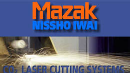

|
 Bundan
önce tezgahlar, Avrupa Mazak üzerinden Mazak Form Makina'ye
iletilmekte idi ve bu da % 30-35'e varan maliyet artýþlarýna
sebebiyet vermekteydi. Bundan
önce tezgahlar, Avrupa Mazak üzerinden Mazak Form Makina'ye
iletilmekte idi ve bu da % 30-35'e varan maliyet artýþlarýna
sebebiyet vermekteydi.
Piyasada
bilinen tüm Mazak ürünlerinin yaný sýra, yeni ve dikkat çekici
fiyatlarýmýz ile, Mazak Lazer Ýþleme Merkezlerinin de, piyasada
ciddi þekilde aðýrlýðýný hissettireceðine inanýyoruz.
Gerek
lazer iþleme merkezleri, gerek Mazak'ýn diðer tüm ürünleri
konusunda, ihtiyaç duyabileceðiniz tüm bilgi, görüþ ve döküman
konularýnda yanýnýzdayýz.
Aþaðýda,
Mazak lazer iþleme tezgahlarý ve avantajlarý hakkýnda detaylý
bilgi bulunmaktadýr. (Konuya giriþ amaçlý bilgi almak için
ise ilgili bir makalemizi okuyabilirsiniz: Lazer
iþleme merkezleri)
SEÇÝM KRÝTERLERÝNÝZE MAZAK'IN GENÝÞ LAZER ÝÞLEME TEZGAH YELPAZESÝ
ÝLE YAKLAÞIMI:
- Mazak
tezgahlarýnda, DÖKÜM GÖVDESÝ ve düzensiz haraketlerden kaynaklanan
vibrasyon önleyici YENÝ SERVO TEKNOLOJÝSÝ ile konu hakkýndaki
hassasiyetini temel kriter olarak vurgulamaktadýr. (Öneðin;
10mm çapta 6m/dak. hýzda, 1,2mm sacda kesim sonuçlarýnda
0,05mm lik hassasiyet saðlanabilmektedir.)
- Lazer
rezenatörü makine gövdesindedir. Böylece, vibrasyon etkisi
minimum'a indirgenmiþ. Gerek rezenatörün, gereken ýþýn taþýyýcý
borularýn fazladan yer kaplamamasý, ciddi bir alan tasarufu
saðlamakdýr.
- Mazak,
önceki tezgahlarýnda, X44 Super Turbo ve U44 Space Gear
modellerinde Gezer Optik Kafa (Flying Optics) tipi uygulamasý
yapmýþtýr. Bu modeller, az yer kaplayan, 1,250x1,250mm'lik
Kompakt Lazer tezgahlardýr (küçük atölye veya araþtýma
merkezleri türü yerlerin tercih edeceði tezgahlardýr).
Bu tezgahlarda ýþýk hareketleri boyutlardan dolayý olabildiðince
kýsa tutulmuþtur.
Mazak, Döküm Gövde, Yeni Servo Vibrasyon Önleyici Teknolojisinin
verdiði güven ile büyük tezgahlarýnda hibrit yapýya
geçmiþtir.
Bu yapýda; kafa hareketleri ve ýþýðýn katedeceði yol
olabildiðince az tutulmuþtur. Kafa hareketleri çaprazda
Y ekseninde, dikeyde ise Z ekseninde gerçekleþmektedir.
Lazer ýþýðýna asýl yol kateddirecek olan X ekseni hareketlerinde
ise, "Lazer Kafa" sabit tutulmuþ, hareket
X-ekseninde tabla hareketine dönüþtürülmüþtür (Beþ eksenli
modellerde A ve B eksenlerinde açýsal hareketler mevcuttur).
Bu yapý yardýmý ile, ek odaklayýcý ve doðrultucu elemanlar
minimum'a indirgenmiþtir.. Bunlarda, ek maliyet, periyodik
bakým-deðiþim ve servis maliyeti ile birebir baðlantýlý
kriterlerdir.
- Mazak
Lazer Ýþleme Merkezlerinde, CO2
lazer gazý karýþým tüpünün tek bir tüpe indirgenmesi,
önemli maliyet kriterlerinden biri olan gaz tüketiminin
ve tüp maliyetinin minimum'a indirgenmesini saðlanmýþtýr.
Karýþým gaz, CAD/CAM programý yardýmý ile oransal olarak
direkt osülatör içindeki lazer tüplerine iletilmektedir.
Bu aþamada dikkati çekmesi gerekli temel bir konu; faklý
farklý tüpten gelecek olan gazlarýn karýþtýrýlmasý ve
sonrasý lazer tüplerine iletilmesi için gerekli ara
bir ekipmanýn (Ek maliyet) olmamasýdýr.
Yardýmcý gazlar tüketim oranlarýnda Mazak, hassasiyetini
incelenecek rakamsal veriler ve gerçek uygulama perfomansý
ile göstermektedir. Chiller ünütesi.. yeknesat.. Hava
kurutucu ünitesinin ana soðutucu ünitesi içerisine entegre
edilmiþ olmasýda da, toplam elektrik tüketimi konusunda
pozitif yönde bir geliþmedir.
- Soðutucu
ünite dahil olmak üzere, toplam elektriksel güç gereksinimler
oldukça verimli seviyelerdedir. (Örneðin; Super Turbo
X 510-1.5kW için 35.1 kVA dýr.)
- Malzemenin
cinsi ve kalýnlýðýnýn CNC'ye girilmesi ile; sistem otomatik
olarak optimum lazer çýkýþ gücünü, kesim hýzýný, kullanýlacak
yardýmcý gaz türünü ve basýncýný ayarlayabilmektedir. Ayrýca,
odaklama noktasý da otomatik olarak kontrol edilebilmektedir.
Tüm bu önceden belirlenmiþ iþleme faktörlerinin kontrolü
ile, deðiþik kalýnlýklardaki deðiþik malzemelerin kesim
iþlemleri, operatörün makine ayarlarý deðiþimine gerek duyulmaksýzýn
gerçekleþtirilebilmektedir. Ayný kesme kafasý ile ince veya
kalýn saclar, kafa deðiþimine ve ayarlara gerek duyulmaksýzýn
kesintisiz olarak gerçekleþtirilmektedir.
- Mazak
þirket olarak; sevis aðý, kalitesi ve güvenilirliðini temel
prensipler arasýnda benimsemiþtir. Türkiyedeki Mazak servis
performasý ise, yurtdýþý performans kriterlerinde övgü ile
gösterilmektedir.
En etkili ve kalýcý izlenim, müþterilerimizin bizler için
söyledikleridir. Türkiyede, 1,000'in üzerinde referansýmýz
sizlerin yakýndan incelemesine deðer bir kriterdir.
- Mazak
Smart Sistemin aþaðýda örnekleri verilen çok geliþmiþ fonksiyonlarý,
FMS (Esnek Üretim Sistemleri) operasyonunu DNC modunda desteklemektedir.
Örnek Fonksiyonlar: Dizayn Ünitesi, Parçalara Ayýrma, Çizim
Ünitesi Parçalarý, Geniþletilmiþ Çizimler, 'CAM data giriþi,
Yerleþtirme, NC Data Çevrimi, Hazýr Parametreler.
KARÞILAÞTIRMALI
AVANTAJ KRÝTERLERÝ:
I-
Kesme esnasýnda, saclarýn kendi aðýrlýðýnýn oldukça fazla
olmasý ve metal testere aðýzlý týrnaklar üzerine oturmasý
sebebi ile yerinden kaymasý çok güçtür. Ayrýca, ek önlem olarak
kullanýlan tutucu klamplar bunu imkansýz hale getirmektedir.
Klamp'larýn ek faydalarýndan biri ise; rulondan gelen bombeleþmiþ
levhalarýn klamplar sayesinde tabla üzerinde düzeltilmesidir.
Kullanýlan klamplar, sadece 10X50 mm ebadýnda saca girip,
tutmaktadýr. Klamp yerleri CAD/CAM yazýlýmý yardýmýyla belirlenmekte,
yerleþim buna göre ayarlanmaktadýr.
Çok ince saclar kesildikçe zayýflayabilmektedir. Bu tür durumlarda
parçada kayma olmamasý için, yukarýda belirtilen ana önlemlere
ek olarak, mikro-joint denilen sistem kullanýlmaktadýr. Mikro-joint,
CAD programda otomatik belirlenir. Bu sistem sayesinde, çok
ufak parçalar kesildikten sonra, 1mm'den az bir "son
parçaçýk" ile yapýda tutturulmaktadýr. Böylece, kesilen
parçanýn düþmesi engellenmektedir.
II-
Mark II ve FG serilerinde mekik tabla opsiyonu getirilmiþtir.
Entegre olarak, otomatik yükleme ve boþaltma (Auto Load ve
Unload) sistemleri eklenebilmektedir. Dört faklý makineyi
besleyebilecek FMS sistemi (Esnek Üretim Sistemleri-6/10 Raf)
eklenerek, farklý saclarýn da otomatik yükleme, boþaltma olanaðý
saðlanabilmektedir. Ayrýca, sisteme "Stocker" eklenerek,
otomatik olarak kesilen parçalarýn tezgahtan alýnýp, belirli
istasyonlarda üst üste istiflenmesi saðlanabilmektedir. (Optopath)
III-
Testere þekilli levha kaldýrýcý üzerine konulan levha,
tabla içerisinde bulunan ve ayaklý pedal yardýmý ile yüzeye
gelen bilyalar sayesinde kolayca haraket ettirilebilmektedir.
IV-
"Flying Optics" (gezer kafa) sistemi kullanýlan
diðer firmalarýn büyük tezgahlarýnda, gezen aksamda körük
kullanýlmaktadýr. Körük, ýþýn yolunu korumaktadýr. Körükte
yýrtýlma, sökülme sonucu oluþabilecek küçük bir delik, maliyetleri
yüksek problemlere neden olmaktadýr (Körük maliyetleri de
yüksektir). Mazak büyük lazer tezgahlarýnda ise, (bunlarda
hibrit yapý kullanýlmaktadýr) kullanýlan körük çok küçük tutulmuþtur.
V-
Büyük Mazak Lazer Tezgahlarda (Hibrit yapýlý) hareket, Vidalý
Mil (Ball Screw) sistemi ile saðlanýr. Gezer Kafa (Flying
Optics) kullanýlan tezgahlarda ise hareket "Rack and
Pinion" sistemi ile saðlanýr. "Rack and Pinion"
hareket sistemi, hýzdan dolayý hassasiyet problemi yaratmaktadýr.
(1-2 sene içerisinde ) Bakým maliyetleri yüksektir (Hassasasiyetler;
Vidalý mil hareketlerinde yüzde bir, Rack and Pinion sistemlerinde
ise onda bir oranlarýndadýr).
VI-
Lazer gazý, Mazak tezgahlarda üç gazýn tek tüp içerisinde
olacak þekilde yerleþtirilmesi þeklinde kullanýlýr. Lazer
gazý, gaz üreten firmalardan tek tüp olarak satýn alýnýr.
Diðer Lazer tezgah firmalarýnda lazer gazý, üç farklý tüp
þeklinde kullanýlýr. Daha sonra bunlar bir ara karýþtýrýcý
ünite ile karýþtýrýlýr ve lazer tüplere verilir (ek maliyet
ve hassasiyet sorunlarý ile karþýlaþýlýr). Ayrýca diðer bir
problem ise, üç farklý tüpün bitim ve deðiþim süreleri farklý
olacaðý için, farklý zamanlarda deðiþim gerektirecektir (ek
iþ ve zaman kaybý).
VII-
Kullanýlan iç ve dýþ aynalarýn, sayý olarak diðer firmalara
kýyasla daha az olmasý, bakým anýnda daha az maliyet ve bakým
hýzý saðlamaktadýr. Ayrýca, rezenatörün bakýmý da bu sayede
çok kolay olmaktadýr.
VIII-
Rezenatördeki lazer tüplerini soðutma sistemini gerçekleþtiren
"Soðutucu Ünite" sinin (Chiller Unit) çalýþma ýsý
aralýðý geniþtir. Bu " Soðutucu Ünite" sinin ömrünü
uzatýr. Motor, fan ve hava kaçaðý gibi sorunlar ile kolay
kolay karþýlaþýlmaz.
Ýrtibat:
Murat BARAN
Mazak Lazer Tezgahlar Satýþ ve Pazarlama Müdürü
E-Posta: mbaran@formcnc.com.tr
Mazak - FORM Makina CNC Takým Tezgahlarý San. ve Tic. A.Þ.
Kýsýklý Cad. Haluk Türksoy Sok. No:1 Baðlarbaþý - Üsküdar
- Ýstanbul
Tel
: (216) 474 45 70
Faks : (216) 474 28 70
Web: www.formcnc.com.tr
|